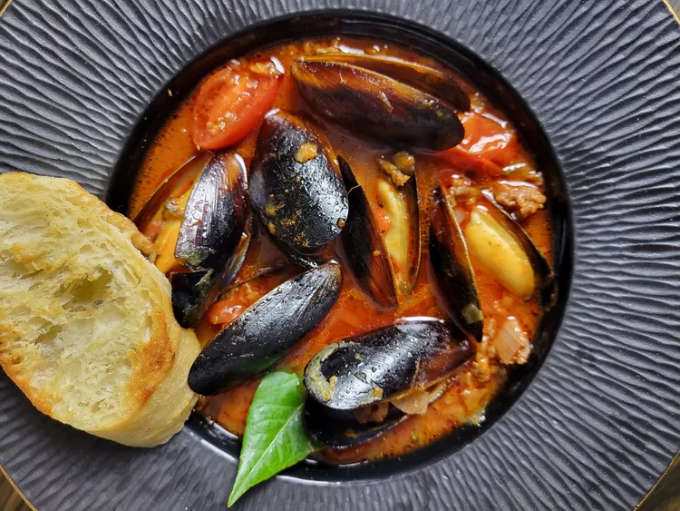

Mussels and Chorizo

Ingredients
- 1 pound fresh mussels
- 1 tablespoon vegetable oil
- 1 shallot, finely chopped
- 1 poblano pepper, chopped
- 2 cloves garlic, minced
- 1//2 pound fresh ground chorizo
- 1 tablespoon panca pepper paste (Peruvian-style pepper paste)
- 1 (14.5 ounce) can diced roasted tomatoes
- 1/2 cup seafood stock or chicken broth
Directions
- Soak, clean, and debeard mussels (see Note).
- Heat oil in a Dutch oven or cast iron skillet. Add shallots, poblano peppers, and garlic. Stir until fragrant, 2 to 3 minutes.
- Add chorizo; cook and stir until browned and crumbly. 5 to 7 minutes. Stir in panca pepper paste. Add roasted tomatoes and stock. Bring to a boil.
- Reduce heat and bring broth to a simmer. Add mussels; cover and cook until shells open, about 5 minutes.